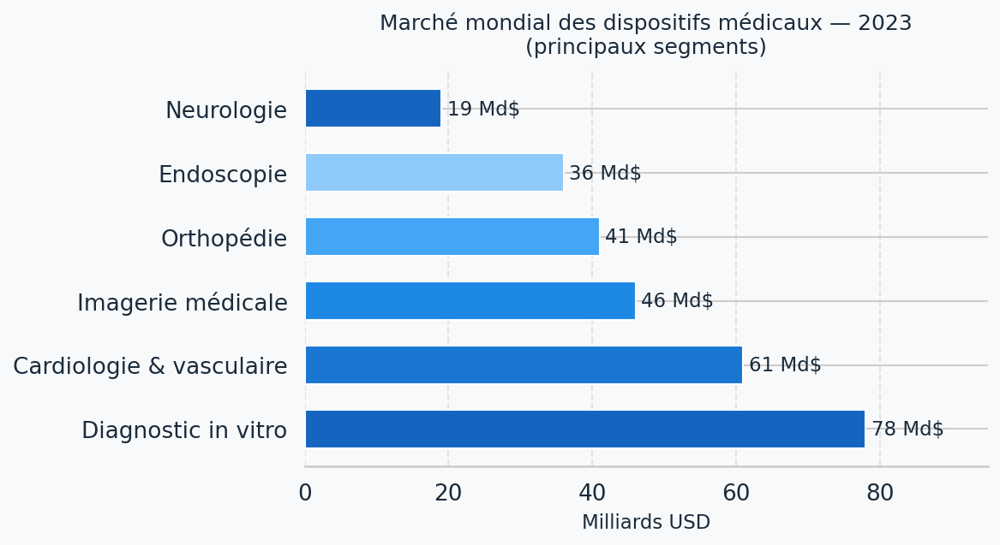
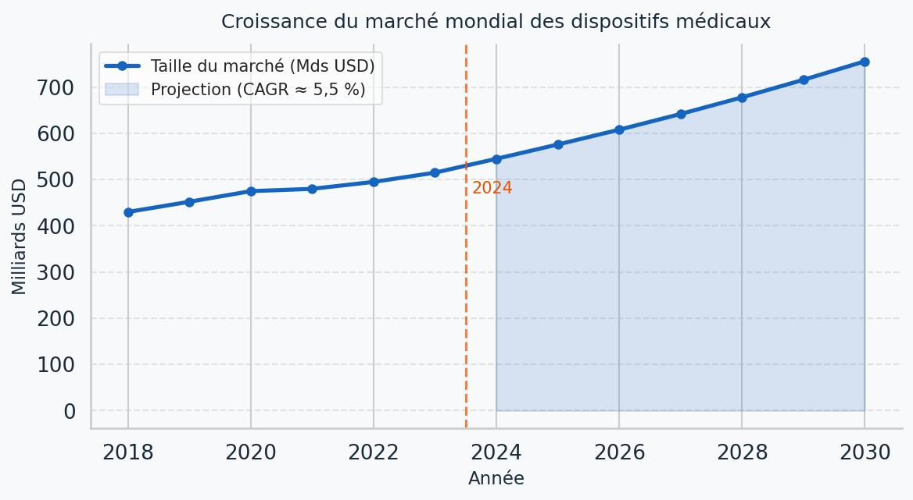
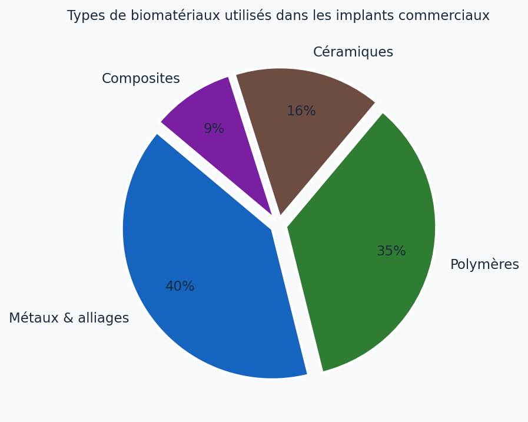
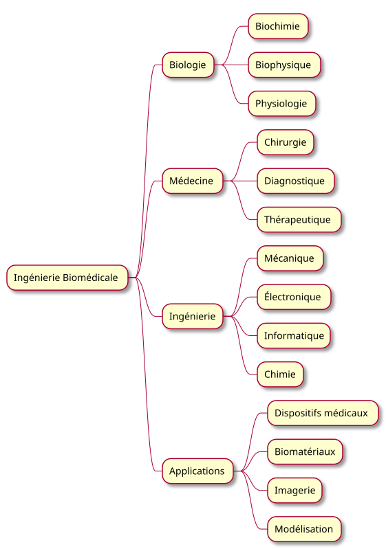
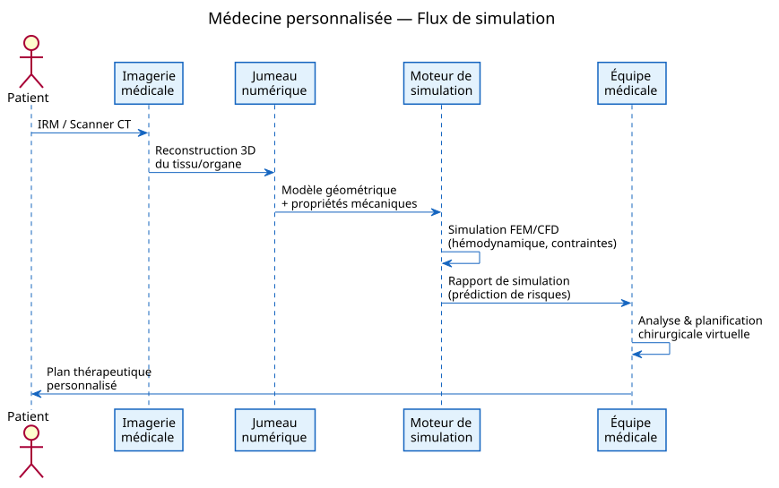
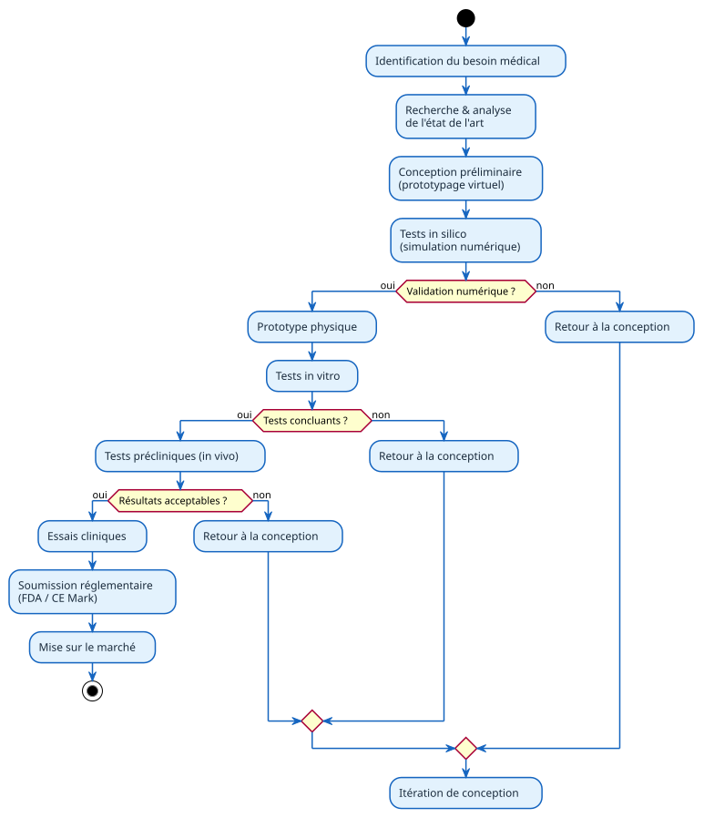

L'Ingénierie Biomédicale
Applications · Biomatériaux · Simulation
Introduction — CEC-6
Sources : OMS, GlobalData, Ratner et al., Nature Biomed. Eng.
Une question pour commencer…
« Si vous deviez concevoir un cœur artificiel demain matin,
par où commenceriez-vous ? »
- Problème mécanique — résistance, fatigue, débit
- Problème biologique — biocompatibilité, coagulation
- Problème électronique — capteurs, régulation
- Problème logiciel — algorithmes de contrôle
→ L'ingénierie biomédicale : là où toutes ces disciplines se rencontrent.
Plan
1 · Définition & contexte
Qu'est-ce que l'ingénierie biomédicale ?
2 · Applications médicales
Dispositifs, imagerie, prothèses
3 · Biomatériaux
Types, propriétés, exemples
4 · Modélisation & simulation
Médecine personnalisée, jumeaux numériques
⏱ ~9 min · Questions : 5 min
1 · L'ingénierie biomédicale
Application des principes et des méthodes d'ingénierie
aux sciences biologiques et médicales.
- Champ interdisciplinaire : mécanique, électronique, chimie, informatique
- Objectif : améliorer le diagnostic, le traitement et la prévention
- Marché mondial estimé à ~ 500–520 Md$ en 2023
Source : GlobalData Medical Devices Market Report 2024 ; IMDRF 2023
Marché mondial — principaux segments

Sources : GlobalData 2024 ; IMDRF 2023 — valeurs indicatives en Mds USD
Croissance du marché biomédical

- CAGR ≈ 5,5 % sur la période 2018–2030
- Moteurs : vieillissement démographique, maladies chroniques, IA
Sources : Evaluate MedTech 2023 ; GlobalData 2024
2 · Dispositifs médicaux
Cardiologie
Pacemakers, défibrillateurs (DAI), cœurs artificiels
Métabolisme
Pompes à insuline, pancréas artificiel en boucle fermée
Réanimation
Ventilateurs mécaniques, oxygénateurs ECMO
- Du capteur (signal biologique) au système complet (actionneur)
- Processus réglementé : FDA (États-Unis), marquage CE (Europe)
Réf. : Enderle & Bronzino, Introduction to Biomedical Engineering, 3e éd., 2012
Imagerie médicale — voir sans ouvrir
- Radiographie X — os, poumons
- Tomodensitométrie (TDM/CT) — coupes 3D
- IRM — tissus mous, cerveau, cœur
- Ultrasons (échographie) — temps réel
- TEP (PET) — métabolisme cellulaire
Traitement numérique
Reconstruction 3D · segmentation · IA diagnostique
→ Précision, rapidité, non-invasivité
Exemple
Détection précoce de tumeurs mammaires par CNN
Sensibilité > 90 % (McKinney et al., Nature 2020)
Prothèses & implants — restaurer le mouvement
- Membres bioniques — commande myoélectrique, retour haptique
- Implants cochléaires — traitement numérique du son, ~700 000 porteurs
- Implants rétiniens — Argus II (Second Sight Medical)
- Exosquelettes — réhabilitation motrice, lésions médullaires
- Interfaces cerveau-machine (BCI) — Neuralink, BrainGate
« L'enjeu n'est plus de remplacer un membre,
mais de le réintégrer dans le système nerveux. »
Réf. : Resnik et al., JRRD 2012 ; Bensmaia & Miller, Nat Rev Neurosci 2014
3 · Biomatériaux
Tout matériau conçu pour interagir avec des systèmes biologiques
dans un but diagnostique ou thérapeutique.
(Williams, Biomaterials 2009)
Propriétés clés :
Biocompatibilité
Pas de réaction toxique ni immune
Résistance mécanique
Charges cycliques, fatigue, usure
Durabilité in vivo
Corrosion, dégradation contrôlée
Quatre familles de biomatériaux
- Métaux Ti-6Al-4V → prothèses orthopédiques
- Céramiques Hydroxyapatite → revêtements osseux
- Polymères PLGA → sutures résorbables
- Composites Fibre de carbone → prothèses de sport
- Biologique
Tissus décellularisés, hydrogels, organoïdes

Sources : Ratner et al., Biomaterials Science, 4e éd., 2020 ; estimations IUPAC
Ingénierie biomédicale — carrefour de disciplines

Diagramme PlantUML — source : diagrams/interdisciplinary.puml
4 · Modélisation computationnelle
- Éléments finis (FEA/FEM) — contraintes mécaniques dans les os, implants
- Dynamique des fluides (CFD) — flux sanguin, anévrismes, valves
- Modèles multi-physiques — couplage électrique-mécanique (cœur)
Objectif : réduire les essais in vitro / in vivo,
accélérer la conception et personnaliser le traitement.
Réf. : Taylor & Figueroa, Annu. Rev. Biomed. Eng. 2009 ;
Viceconti et al., Nat. Biomed. Eng. 2020
Médecine personnalisée & jumeaux numériques

Diagramme PlantUML — source : diagrams/personalized-medicine.puml
Du concept au patient — pipeline réglementaire

Diagramme PlantUML — source : diagrams/medical-device-pipeline.puml
IA & perspectives
- Analyse d'images (CNN) — détection précoce
- Prédiction de pathologies — données multiomiques
- Conception de médicaments — AlphaFold, RFdiffusion
- Chirurgie robotique — Da Vinci, Mako
Essais « in silico »
Tester des milliers de variants d'un implant par simulation
avant tout prototypage physique
→ Réduction des coûts, délais, tests animaux
Réf. : Topol, Nat. Med. 2019 ;
Jumper et al. (AlphaFold), Nature 2021
En résumé
-
Applications médicales — dispositifs, imagerie, prothèses :
l'ingénieur conçoit les outils du médecin
-
Biomatériaux — la matière au service du vivant :
biocompatibilité + performance mécanique
-
Modélisation & simulation — « le numérique au chevet du patient » :
personnalisation, jumeaux numériques, IA
L'ingénieur biomédical est le pont
entre la technologie et la santé humaine —
un métier d'avenir au croisement de toutes les disciplines.
Questions ?
Merci de votre attention
Diaporama réalisé avec reveal.js ·
Diagrammes : PlantUML ·
Visualisations : Python seaborn
Références
-
Enderle, J. D., & Bronzino, J. D. (2012).
Introduction to Biomedical Engineering (3e éd.).
Academic Press / Elsevier.
-
Ratner, B. D., Hoffman, A. S., Schoen, F. J., & Lemons, J. E. (2020).
Biomaterials Science: An Introduction to Materials in Medicine (4e éd.).
Academic Press.
-
Williams, D. F. (2009).
On the nature of biomaterials.
Biomaterials, 30(30), 5897–5909.
doi:10.1016/j.biomaterials.2009.07.027
-
McKinney, S. M., et al. (2020).
International evaluation of an AI system for breast cancer screening.
Nature, 577, 89–94.
doi:10.1038/s41586-019-1799-6
-
Viceconti, M., et al. (2020).
Credibility of in silico trials in medical device development.
Nature Biomedical Engineering, 4, 10–24.
doi:10.1038/s41551-019-0497-z
-
Taylor, C. A., & Figueroa, C. A. (2009).
Patient-specific modeling of cardiovascular mechanics.
Annual Review of Biomedical Engineering, 11, 109–134.
doi:10.1146/annurev.bioeng.10.061807.160521
-
Jumper, J., et al. (2021).
Highly accurate protein structure prediction with AlphaFold.
Nature, 596, 583–589.
doi:10.1038/s41586-021-03819-2
-
Topol, E. J. (2019).
High-performance medicine: the convergence of human and artificial intelligence.
Nature Medicine, 25, 44–56.
doi:10.1038/s41591-018-0300-7
-
GlobalData. (2024).
Medical Devices Market Report 2024.
GlobalData Plc, Londres.
-
Organisation mondiale de la Santé (OMS). (2023).
Dispositifs médicaux — Priorités mondiales.
who.int/health-topics/medical-devices